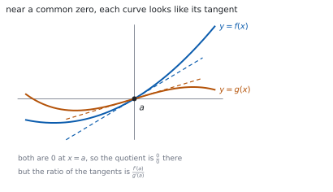
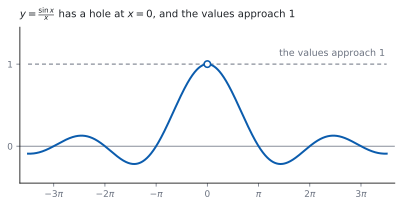

HL 5.13 — Limits and l’Hôpital’s rule（極限と l’Hôpital の定理）
- 不定形（indeterminate form）\(\dfrac{0}{0}\) と \(\dfrac{\infty}{\infty}\) を見分けられる。
- l’Hôpital の定理を使って極限を求められる。
- 使う前に、形が不定形かどうかを確かめることができる。
- 必要なら、くり返し使える。
- \(x \to \infty\) の極限を求め、水平漸近線と結びつけられる。
- \(\displaystyle\lim_{\theta \to 0}\frac{\sin\theta}{\theta} = 1\) を使える。
The idea
1. Indeterminate forms（不定形）
シラバスは、こう書いています。
The indeterminate forms \(\dfrac{0}{0}\) and \(\dfrac{\infty}{\infty}\).
分子と分母がどちらも \(0\) に近づくとき、またはどちらも \(\infty\) に近づくときは、代入しても値が決まりません。
\[ \frac{0}{0}, \qquad \frac{\infty}{\infty} \]
「決まらない」であって、「存在しない」ではありません。 実際、\(\dfrac{x^{2}}{x}\) は \(0\) に、\(\dfrac{x}{x^{2}}\) は \(\infty\) に、\(\dfrac{3x}{x}\) は \(3\) に近づきます。どれも \(\dfrac{0}{0}\) の形です。
2. l’Hôpital’s rule（l’Hôpital の定理）
シラバスは、こう書いています。
The evaluation of limits of the form \(\displaystyle\lim_{x \to a}\frac{f(x)}{g(x)}\) and \(\displaystyle\lim_{x \to \infty}\frac{f(x)}{g(x)}\) using l’Hôpital’s rule or the Maclaurin series.
\[ \lim_{x \to a}\frac{f(x)}{g(x)} = \lim_{x \to a}\frac{f'(x)}{g'(x)} \tag{1}\]
分子と分母を、別々に微分します。 商の微分ではありません（第 3 節）。

なぜこれでよいかは、上の図のとおりです。\(x = a\) の近くで \(f(x)\) は \(f'(a)(x-a)\)、\(g(x)\) は \(g'(a)(x-a)\) とほぼ同じなので、比は \(\dfrac{f'(a)}{g'(a)}\) に近づきます（第 1 節）。
3. Check the form first（まず形を確かめる）
\(\displaystyle\lim_{x \to 0}\frac{x+1}{x+2}\) は、代入すれば \(\dfrac{1}{2}\) です。不定形ではありません。
ここで 式 1 を使うと \(\dfrac{1}{1} = 1\) となり、まちがった答えが出ます。
答案には「\(\dfrac{0}{0}\) の形なので」と書いてから、定理を使ってください。これが書いていないと点になりません。
4. Repeated use（くり返し使う）
Repeated use of l’Hôpital’s rule.
\(1\) 回微分しても、まだ \(\dfrac{0}{0}\) のことがあります。そのときはもう一度使います。
毎回、形を確かめてから使ってください。途中で不定形でなくなったら、そこで代入します。
5. Limits as \(x \to \infty\)（\(x \to \infty\) の極限）
\(x \to \infty\) でも同じように使えます。分子・分母がどちらも \(\infty\) に近づくときです。
シラバスは、水平漸近線と結びつけています。
Link to: horizontal asymptotes (SL2.8).
\(\displaystyle\lim_{x \to \infty} f(x) = L\) なら、\(y = L\) が水平漸近線です（SL 2.8）。
有理関数なら、最高次の項の係数の比でも同じ答えが出ます。検算に使えます。
6. The standard limit \(\dfrac{\sin\theta}{\theta}\)（\(\sin\theta/\theta\) の極限）
シラバスが例に挙げているのが、この極限です。
For example: \(\displaystyle\lim_{\theta \to 0}\frac{\sin\theta}{\theta} = 1\).
\[ \lim_{\theta \to 0}\frac{\sin\theta}{\theta} = 1 \tag{2}\]

\(\theta\) はラジアンです。度で測ると、この式は成り立ちません（第 4 節）。
7. Using the Maclaurin series instead（Maclaurin 級数を使う手）
シラバスは「l’Hôpital の定理または Maclaurin 級数」と書いています。
たとえば \(\sin\theta = \theta-\dfrac{\theta^{3}}{3!}+\cdots\) なので
\[ \frac{\sin\theta}{\theta} = 1-\frac{\theta^{2}}{6}+\cdots \ \longrightarrow \ 1 \]
です。級数のほうは、AHL 5.19 で扱います。どちらで解いてもかまいません。
TI-Nspire CX II の limit( に、そのまま入れられます。limit(sin(3x)/x, x, 0) のようにします。
\(x \to \infty\) なら、limit(f(x), x, ∞) です。\(\infty\) は ctrl + i で入れます。RAD になっているかを見てください。
答案には、式を書いてください。 「\(\dfrac{0}{0}\) の形なので」の \(1\) 文と、式 1 を使った行を見せます。limit(...) と書いても点になりません。
Paper 1 では使えません。 このページの例題と演習は、すべて手で解けるようにしてあります。
Why it works
なぜ、分子と分母を別々に微分してよいのか
\(f(a) = g(a) = 0\) とします。\(x = a\) の近くでは
\[ f(x) \approx f'(a)(x-a), \qquad g(x) \approx g'(a)(x-a) \]
です。これは接線の式そのものです（HL 5.12）。
比を作ると \((x-a)\) が約分されて
\[ \frac{f(x)}{g(x)} \approx \frac{f'(a)(x-a)}{g'(a)(x-a)} = \frac{f'(a)}{g'(a)} \]
になります。\(0\) に近づく速さを比べているのだ、と読むこともできます。
なぜ、形を確かめないといけないのか
上の議論は \(f(a) = g(a) = 0\) を使っています。そうでなければ、\((x-a)\) の約分が起きません。
\(\dfrac{x+1}{x+2}\) で試すと、分子は \(1\)、分母は \(2\) に近づくので、比はそのまま \(\dfrac{1}{2}\) です。微分してしまうと \(\dfrac{1}{1}\) になり、もとの式とは無関係な数が出ます。
定理には条件があり、条件を確かめるまでが定理の使い方です。
なぜ、\(\dfrac{\infty}{\infty}\) でも使えるのか
\(\dfrac{f}{g} = \dfrac{1/g}{1/f}\) と書きなおすと、分子・分母がどちらも \(0\) に近づきます。
つまり \(\dfrac{\infty}{\infty}\) は \(\dfrac{0}{0}\) に直せます。ですから、同じ定理が使えます。
有理関数では、最高次の項が勝ちます。 \(\dfrac{3x^{2}+2x}{x^{2}-5}\) なら、大きい \(x\) で \(\dfrac{3x^{2}}{x^{2}} = 3\) です。微分をくり返しても同じ答えになります。
なぜ、ラジアンでないといけないのか
\(\dfrac{\mathrm{d}}{\mathrm{d}x}\sin x = \cos x\) が成り立つのは、ラジアンで測ったときだけです（SL 5.6）。
度で測ると、\(\sin x^{\circ} = \sin\left(\dfrac{\pi x}{180}\right)\) なので、微分に \(\dfrac{\pi}{180}\) が付きます。
すると 式 2 の右辺も \(\dfrac{\pi}{180}\) になってしまいます。\(1\) になるのは、ラジアンのおかげです。
Worked examples
問題文は英語です。意味が理解できなかったら、問題文の下の「日本語訳」を開いてください。解説は日本語です。
例題も演習も、すべて電卓なしで解けます。 Paper 1 のつもりで解いてください。
例題 1 Find \(\displaystyle\lim_{x \to 0}\frac{\sin 3x}{x}\).
日本語訳
\(\displaystyle\lim_{x \to 0}\frac{\sin 3x}{x}\) を求めなさい。
まず形を確かめます（第 3 節）。\(x = 0\) を入れると \(\dfrac{\sin 0}{0} = \dfrac{0}{0}\) で、不定形です。
式 1 を使います。分子と分母を別々に微分します。
\[ \lim_{x \to 0}\frac{\sin 3x}{x} = \lim_{x \to 0}\frac{3\cos 3x}{1} = 3\cos 0 = 3 \]
検算。 式 2 から出します。 \(\dfrac{\sin 3x}{x} = 3\cdot\dfrac{\sin 3x}{3x}\) で、\(3 \times 1 = 3\) ✓
検算（数で）。 \(x = 0.01\) なら \(\dfrac{\sin 0.03}{0.01} \approx 2.9996\) ✓ \(3\) に近づいています。
As \(x \to 0\) both \(\sin 3x \to 0\) and \(x \to 0\), so the limit has the form \(\dfrac{0}{0}\).
\[\lim_{x \to 0}\frac{\sin 3x}{x} = \lim_{x \to 0}\frac{3\cos 3x}{1} = 3\]
例題 2 Find \(\displaystyle\lim_{x \to 0}\frac{e^{x}-1-x}{x^{2}}\).
日本語訳
\(\displaystyle\lim_{x \to 0}\frac{e^{x}-1-x}{x^{2}}\) を求めなさい。
\(x = 0\) で分子は \(1-1-0 = 0\)、分母も \(0\) です。\(\dfrac{0}{0}\) の形です。
\[ \lim_{x \to 0}\frac{e^{x}-1-x}{x^{2}} = \lim_{x \to 0}\frac{e^{x}-1}{2x} \]
まだ \(\dfrac{0}{0}\) です。 もう一度使います（第 4 節）。
\[ = \lim_{x \to 0}\frac{e^{x}}{2} = \frac{1}{2} \]
検算。 \(2\) 回目のあとは不定形ではありません。 \(\dfrac{e^{0}}{2} = \dfrac{1}{2}\) ✓ そこで止めます。
検算（数で）。 \(x = 0.01\) なら分子 \(\approx 0.0000502\)、分母 \(0.0001\) で、比は \(\approx 0.502\) ✓
The form is \(\dfrac{0}{0}\), so
\[\lim_{x \to 0}\frac{e^{x}-1-x}{x^{2}} = \lim_{x \to 0}\frac{e^{x}-1}{2x}\]
This is again \(\dfrac{0}{0}\), so
\[= \lim_{x \to 0}\frac{e^{x}}{2} = \frac{1}{2}\]
例題 3 Find \(\displaystyle\lim_{x \to \infty}\frac{3x^{2}+2x}{x^{2}-5}\), and state the equation of the horizontal asymptote of \(y = \dfrac{3x^{2}+2x}{x^{2}-5}\).
日本語訳
\(\displaystyle\lim_{x \to \infty}\frac{3x^{2}+2x}{x^{2}-5}\) を求め、\(y = \dfrac{3x^{2}+2x}{x^{2}-5}\) の水平漸近線の方程式を書きなさい。
\(x \to \infty\) で分子も分母も \(\infty\) に近づきます。\(\dfrac{\infty}{\infty}\) の形です。
\[ \lim_{x \to \infty}\frac{3x^{2}+2x}{x^{2}-5} = \lim_{x \to \infty}\frac{6x+2}{2x} \]
まだ \(\dfrac{\infty}{\infty}\) なので、もう一度です。
\[ = \lim_{x \to \infty}\frac{6}{2} = 3 \]
ですから、水平漸近線は \(y = 3\) です（第 5 節）。
検算。 最高次の係数の比で見ます。\(\dfrac{3}{1} = 3\) ✓
検算（数で）。 \(x = 100\) なら \(\dfrac{30200}{9995} \approx 3.02\) ✓ \(3\) に近づいています。
The form is \(\dfrac{\infty}{\infty}\), so
\[\lim_{x \to \infty}\frac{3x^{2}+2x}{x^{2}-5} = \lim_{x \to \infty}\frac{6x+2}{2x} = \lim_{x \to \infty}\frac{6}{2} = 3\]
The horizontal asymptote is \(y = 3\).
例題 4 Find \(\displaystyle\lim_{x \to 0}\frac{x-\sin x}{x^{3}}\).
日本語訳
\(\displaystyle\lim_{x \to 0}\frac{x-\sin x}{x^{3}}\) を求めなさい。
\(x = 0\) で分子は \(0-0 = 0\)、分母も \(0\) です。
\[ \lim_{x \to 0}\frac{x-\sin x}{x^{3}} = \lim_{x \to 0}\frac{1-\cos x}{3x^{2}} \]
まだ \(\dfrac{0}{0}\) です。
\[ = \lim_{x \to 0}\frac{\sin x}{6x} \]
まだ \(\dfrac{0}{0}\) です。\(3\) 回目を使うか、式 2 を使います。
\[ = \frac{1}{6}\lim_{x \to 0}\frac{\sin x}{x} = \frac{1}{6} \]
検算。 \(3\) 回目の l’Hôpital でも出します。 \(\displaystyle\lim_{x \to 0}\frac{\cos x}{6} = \dfrac{1}{6}\) ✓
検算（数で）。 \(x = 0.1\) なら分子 \(\approx 0.000167\)、分母 \(0.001\) で、比は \(\approx 0.1666\) ✓
Each step has the form \(\dfrac{0}{0}\).
\[\lim_{x \to 0}\frac{x-\sin x}{x^{3}} = \lim_{x \to 0}\frac{1-\cos x}{3x^{2}} = \lim_{x \to 0}\frac{\sin x}{6x} = \lim_{x \to 0}\frac{\cos x}{6} = \frac{1}{6}\]
試験ではこう書く
Substituting \(x = 0\) gives \(\dfrac{0-\sin 0}{0} = \dfrac{0}{0}\), an indeterminate form, so l’Hôpital’s rule may be applied. Differentiating numerator and denominator separately,
\[\lim_{x \to 0}\frac{x-\sin x}{x^{3}} = \lim_{x \to 0}\frac{1-\cos x}{3x^{2}}\]
Substituting \(x = 0\) again gives \(\dfrac{1-1}{0} = \dfrac{0}{0}\), so the rule applies a second time:
\[= \lim_{x \to 0}\frac{\sin x}{6x}\]
This is still \(\dfrac{0}{0}\), so the rule applies a third time, giving
\[= \lim_{x \to 0}\frac{\cos x}{6} = \frac{1}{6}\]
Now the form is no longer indeterminate, so the substitution is legitimate and the process stops. The same answer follows from the standard limit \(\displaystyle\lim_{x \to 0}\frac{\sin x}{x} = 1\) applied at the third stage.
Common errors
不定形でないときに使うと、まちがった答えが出ます（第 3 節）。
\(\displaystyle\lim_{x \to 0}\frac{x+1}{x+2}\) は \(\dfrac{1}{2}\) であって \(1\) ではありません。「\(\dfrac{0}{0}\) の形なので」の \(1\) 文を必ず書いてください。
式 1 は \(\dfrac{f'}{g'}\) であって、\(\left(\dfrac{f}{g}\right)'\) ではありません。
分子と分母を、別々に微分します。商の微分公式は使いません。
微分したあと、また \(\dfrac{0}{0}\) になることがあります（第 4 節）。
毎回、代入して形を確かめてください。不定形でなくなったら、そこが終わりです。
\(\dfrac{\cos x}{6}\) は \(x = 0\) で \(\dfrac{1}{6}\) です。ここでもう一度微分すると、答えが変わってしまいます。
止めどきを見あやまらないこと。代入できるようになったら代入です。
\(\dfrac{0}{0}\) は値が決まらない形であって、ある値ではありません（第 1 節）。
同じ \(\dfrac{0}{0}\) でも、極限は \(0\) にも \(3\) にも \(\infty\) にもなります。
Exercises
各問題に、折りたたみが \(3\) つ付いています。日本語訳、解答例（答案用紙に書くべきこと。英語です）、解説（なぜそうなるか。日本語です）。
まず自分で解いて、次に解答例と見くらべてください。解説は、合わなかったときだけ開けば十分です。
1 Find \(\displaystyle\lim_{x \to 0}\frac{\sin 5x}{2x}\).
日本語訳
\(\displaystyle\lim_{x \to 0}\frac{\sin 5x}{2x}\) を求めなさい。
The form is \(\dfrac{0}{0}\), so
\[\lim_{x \to 0}\frac{\sin 5x}{2x} = \lim_{x \to 0}\frac{5\cos 5x}{2} = \frac{5}{2}\]
2 Find \(\displaystyle\lim_{x \to 0}\frac{1-\cos x}{x^{2}}\).
日本語訳
\(\displaystyle\lim_{x \to 0}\frac{1-\cos x}{x^{2}}\) を求めなさい。
The form is \(\dfrac{0}{0}\), so
\[\lim_{x \to 0}\frac{1-\cos x}{x^{2}} = \lim_{x \to 0}\frac{\sin x}{2x}\]
This is again \(\dfrac{0}{0}\), so
\[= \lim_{x \to 0}\frac{\cos x}{2} = \frac{1}{2}\]
3 Find \(\displaystyle\lim_{x \to \infty}\frac{2x^{2}-1}{5x^{2}+3x}\).
日本語訳
\(\displaystyle\lim_{x \to \infty}\frac{2x^{2}-1}{5x^{2}+3x}\) を求めなさい。
The form is \(\dfrac{\infty}{\infty}\), so
\[\lim_{x \to \infty}\frac{2x^{2}-1}{5x^{2}+3x} = \lim_{x \to \infty}\frac{4x}{10x+3} = \lim_{x \to \infty}\frac{4}{10} = \frac{2}{5}\]
\(2\) 回使います。\(1\) 回目のあとも \(\dfrac{\infty}{\infty}\) だからです。
検算。 最高次の係数の比 \(\dfrac{2}{5}\) ✓（第 5 節）
検算（漸近線）。 \(y = \dfrac{2}{5}\) が水平漸近線です ✓
4 Find \(\displaystyle\lim_{x \to 1}\frac{x^{3}-1}{x-1}\).
日本語訳
\(\displaystyle\lim_{x \to 1}\frac{x^{3}-1}{x-1}\) を求めなさい。
The form is \(\dfrac{0}{0}\), so
\[\lim_{x \to 1}\frac{x^{3}-1}{x-1} = \lim_{x \to 1}\frac{3x^{2}}{1} = 3\]
因数分解でも解けます。\(x^{3}-1 = (x-1)\left(x^{2}+x+1\right)\) なので、約分して \(x^{2}+x+1 \to 3\) です。
どちらでも正解ですが、\(\dfrac{0}{0}\) と書いてから定理を使うほうが速いことが多いです。
検算。 \(1+1+1 = 3\) ✓ 因数分解でも同じ答えです。
検算（導関数として）。 これは \(f(x) = x^{3}\) の \(x = 1\) での導関数です ✓ \(f'(1) = 3\)
5 Find \(\displaystyle\lim_{x \to 0}\frac{e^{2x}-1}{x}\).
日本語訳
\(\displaystyle\lim_{x \to 0}\frac{e^{2x}-1}{x}\) を求めなさい。
The form is \(\dfrac{0}{0}\), so
\[\lim_{x \to 0}\frac{e^{2x}-1}{x} = \lim_{x \to 0}\frac{2e^{2x}}{1} = 2e^{0} = 2\]
\(e^{0} = 1\) なので、分子は \(0\) から始まります。連鎖律で \(2\) が出ます。
検算（導関数として）。 これは \(f(x) = e^{2x}\) の \(x = 0\) での導関数です ✓ \(f'(0) = 2\)
検算（数で）。 \(x = 0.01\) なら \(\dfrac{0.0202}{0.01} \approx 2.02\) ✓
6 Find \(\displaystyle\lim_{x \to 0}\frac{\tan x}{x}\).
日本語訳
\(\displaystyle\lim_{x \to 0}\frac{\tan x}{x}\) を求めなさい。
The form is \(\dfrac{0}{0}\), so
\[\lim_{x \to 0}\frac{\tan x}{x} = \lim_{x \to 0}\frac{\sec^{2}x}{1} = \sec^{2}0 = 1\]
\(\tan x\) の導関数は \(\sec^{2}x\) です（AHL 5.15 で扱います）。\(\sec 0 = \dfrac{1}{\cos 0} = 1\) です。
検算。 \(\dfrac{\tan x}{x} = \dfrac{\sin x}{x}\cdot\dfrac{1}{\cos x} \to 1 \times 1 = 1\) ✓
検算（数で）。 \(x = 0.01\) なら \(\approx 1.00003\) ✓
7 Find \(\displaystyle\lim_{x \to \infty}\frac{\ln x}{x}\).
日本語訳
\(\displaystyle\lim_{x \to \infty}\frac{\ln x}{x}\) を求めなさい。
The form is \(\dfrac{\infty}{\infty}\), so
\[\lim_{x \to \infty}\frac{\ln x}{x} = \lim_{x \to \infty}\frac{1/x}{1} = \lim_{x \to \infty}\frac{1}{x} = 0\]
\(\ln x\) も \(\infty\) に行きますが、\(x\) のほうがずっと速いので、比は \(0\) です。
検算（数で）。 \(x = 1000\) なら \(\dfrac{6.9}{1000} \approx 0.0069\) ✓
検算（漸近線）。 \(y = 0\)、つまり \(x\) 軸が水平漸近線です ✓
8 Find \(\displaystyle\lim_{x \to 0}\frac{x-\arctan x}{x^{3}}\).
日本語訳
\(\displaystyle\lim_{x \to 0}\frac{x-\arctan x}{x^{3}}\) を求めなさい。
The form is \(\dfrac{0}{0}\), so
\[\lim_{x \to 0}\frac{x-\arctan x}{x^{3}} = \lim_{x \to 0}\frac{1-\dfrac{1}{1+x^{2}}}{3x^{2}} = \lim_{x \to 0}\frac{x^{2}}{3x^{2}\left(1+x^{2}\right)}\]
\[= \lim_{x \to 0}\frac{1}{3\left(1+x^{2}\right)} = \frac{1}{3}\]
\(\arctan x\) の導関数は \(\dfrac{1}{1+x^{2}}\) です（AHL 5.15 で扱います）。
分子を \(1\) つの分数にまとめるのがこつです。\(1-\dfrac{1}{1+x^{2}} = \dfrac{x^{2}}{1+x^{2}}\) となり、\(x^{2}\) が約分できます。
検算（数で）。 \(x = 0.1\) なら分子 \(\approx 0.000332\)、分母 \(0.001\) で \(\approx 0.332\) ✓
検算（級数で）。 \(\arctan x = x-\dfrac{x^{3}}{3}+\cdots\) なので、分子は \(\dfrac{x^{3}}{3}\) ✓
試験ではこう書く
Substituting \(x = 0\) gives \(\dfrac{0-\arctan 0}{0} = \dfrac{0}{0}\), so l’Hôpital’s rule applies. Using \(\dfrac{\mathrm{d}}{\mathrm{d}x}\arctan x = \dfrac{1}{1+x^{2}}\),
\[\lim_{x \to 0}\frac{x-\arctan x}{x^{3}} = \lim_{x \to 0}\frac{1-\dfrac{1}{1+x^{2}}}{3x^{2}}\]
Rather than differentiating again, simplify the numerator first:
\[1-\frac{1}{1+x^{2}} = \frac{\left(1+x^{2}\right)-1}{1+x^{2}} = \frac{x^{2}}{1+x^{2}}\]
so the expression becomes \(\dfrac{x^{2}}{3x^{2}\left(1+x^{2}\right)}\). For \(x \neq 0\) the factor \(x^{2}\) cancels, leaving \(\dfrac{1}{3\left(1+x^{2}\right)}\), which is no longer indeterminate. Letting \(x \to 0\) gives \(\dfrac{1}{3}\).
Simplifying at this stage is quicker than applying the rule twice more, and it also makes the cancellation visible.
9 Explain why l’Hôpital’s rule cannot be used to evaluate \(\displaystyle\lim_{x \to 0}\frac{x+1}{x+2}\), and give the correct value.
日本語訳
\(\displaystyle\lim_{x \to 0}\frac{x+1}{x+2}\) に l’Hôpital の定理が使えない理由を説明し、正しい値を求めなさい。
Substituting \(x = 0\) gives \(\dfrac{1}{2}\), which is not an indeterminate form, so the conditions of l’Hôpital’s rule are not satisfied.
The limit is found by direct substitution:
\[\lim_{x \to 0}\frac{x+1}{x+2} = \frac{1}{2}\]
Applying the rule would give \(\dfrac{1}{1} = 1\), which is wrong.
定理には条件があります（第 2 節）。分子・分母がどちらも \(0\)（または \(\infty\)）に近づくことが条件です。
条件を満たさないときは、ふつうに代入するのが正しいやり方です。
検算（数で）。 \(x = 0.01\) なら \(\dfrac{1.01}{2.01} \approx 0.5025\) ✓ \(\dfrac{1}{2}\) に近づきます。
検算（まちがった値）。 \(1\) にはなりません ✓ 定理を誤用すると大きくずれます。
試験ではこう書く
l’Hôpital’s rule may only be applied when the quotient takes an indeterminate form, that is when numerator and denominator both tend to \(0\), or both tend to \(\infty\).
Here, substituting \(x = 0\) gives numerator \(0+1 = 1\) and denominator \(0+2 = 2\). Neither tends to \(0\) or to \(\infty\), so the quotient tends to \(\dfrac{1}{2}\) and the form is not indeterminate. The hypotheses of the rule are not satisfied and it must not be used.
The correct method is direct substitution, since the function is continuous at \(x = 0\):
\[\lim_{x \to 0}\frac{x+1}{x+2} = \frac{0+1}{0+2} = \frac{1}{2}\]
Applying the rule anyway would give \(\displaystyle\lim_{x \to 0}\dfrac{1}{1} = 1\), a different and incorrect value. This shows why the check on the form is part of the method and should be written down before the rule is used.
10 A student evaluates \(\displaystyle\lim_{x \to 0}\frac{\sin x}{x}\) by differentiating \(\dfrac{\sin x}{x}\) with the quotient rule. Identify the error and give the correct working.
日本語訳
ある生徒が \(\displaystyle\lim_{x \to 0}\frac{\sin x}{x}\) を、\(\dfrac{\sin x}{x}\) を商の微分公式で微分して求めようとしました。まちがいを指摘し、正しい計算を書きなさい。
l’Hôpital’s rule replaces the quotient by \(\dfrac{f'(x)}{g'(x)}\), not by the derivative of the quotient.
The numerator and the denominator are differentiated separately:
\[\lim_{x \to 0}\frac{\sin x}{x} = \lim_{x \to 0}\frac{\cos x}{1} = 1\]
\(\dfrac{f'}{g'}\) と \(\left(\dfrac{f}{g}\right)'\) はまったくちがう式です（式 1）。
商の微分をすると \(\dfrac{x\cos x-\sin x}{x^{2}}\) となり、\(x = 0\) でまた \(\dfrac{0}{0}\) です。遠回りになります。
検算。 正しい答えは \(1\) ✓ 式 2 と合います。
検算（図で）。 図 2 の穴の高さが \(1\) ✓
試験ではこう書く
The error is to confuse two different operations. l’Hôpital’s rule states that, when the form is indeterminate,
\[\lim_{x \to a}\frac{f(x)}{g(x)} = \lim_{x \to a}\frac{f'(x)}{g'(x)}\]
The numerator and denominator are differentiated separately, and the result is a new quotient of derivatives. It is not the derivative of the original quotient, which the quotient rule would give as \(\dfrac{g(x)f'(x)-f(x)g'(x)}{\left(g(x)\right)^{2}}\).
For this limit, substituting \(x = 0\) gives \(\dfrac{0}{0}\), so the rule applies with \(f(x) = \sin x\) and \(g(x) = x\):
\[\lim_{x \to 0}\frac{\sin x}{x} = \lim_{x \to 0}\frac{\cos x}{1} = \cos 0 = 1\]
Using the quotient rule instead would produce \(\dfrac{x\cos x-\sin x}{x^{2}}\), which is still \(\dfrac{0}{0}\) at \(x = 0\) and has no bearing on the original limit.